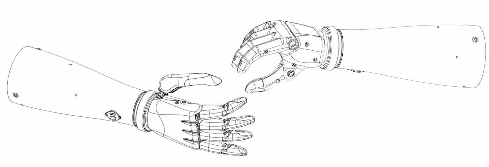

Что из себя представляют 3D-протезы
История 3D-моделирования
3D-моделирование - это процесс создания трёхмерной модели объекта. Задача 3D-моделирования — разработать зрительный объёмный образ желаемого объекта. При этом модель может как соответствовать настоящим объектам, так и быть полностью абстрактной. Первые компьютерные программы, формирующие простые трехмерные модели на основе эскизов, были созданы в 1960 годах в университете города Юты Иваном Сазерлендом и Дэвидом Эвансом. Начиная с середины 1970 годов их последователи Эд Катмулл, Джим Блинн и Би Тюн Фонг продолжили развивать 3D-графику.

Эд Катмулл — американский инженер-мультипликатор, специалист по компьютерной графике, президент DisneyToon Studios, Pixar и Walt Disney Animation Studios, четырёхкратный лауреат «Оскара».
Джим Блинн — аниматор компьютерной графики, который первым разработал множество методов моделирования поверхностей и усовершенствованных методов изображения отражения света на изображениях криволинейных поверхностей.
Би Тюн Фонг— вьетнамский писатель и пионер компьютерной графики. Он изобрел широко используемый алгоритм затенения Фонга и модель отражения Фонга.
Из чего делают 3D протезы?
В настоящее время уже стали печатать зубные протезы на 3D принтере, что стало шагом в развитии медицины. Для их создания используют разные материалы и каждый из них имеет уникальное свойство, делающее протез лучше в той или иной сфере. Снизу вкратце описаны некоторые из таких материалов:
Draft Resin — это материал, с помощью которого можно создать стоматологическую модель меньше чем за 20 минут. Модели обладают высокой детализацией и гладкой поверхностью. Благодаря этому Draft Resin идеально подходит для изготовления элайнеров и ретейнеров.
Dental LT Clear Resin — разработанная специально для стоматологии биосовместимая смола, обладающая высокой устойчивостью к износостойкостью и повреждениям. Свойства Dental LT Clear делают ее идеальной для изготовления элайнеров, шин, фиксаторов и других ортодонтических устройств. Так же она прекрасно полируется до высокой степени оптической прозрачности.
Полимеры Castable Wax Resin позволяют достигать точного краевого прилегания и содержат 20% воска для надежного литья с полным выгоранием. Напечатанные модели получаются прочными и не нуждаются в пост-полимеризации, что позволяет ускорить и упростить рабочий процесс
Custom Tray Resin используют для печати оттисков для имплантатов, протезов, коронок и мостовидных протезов, а также других комплексных изделий. Custom Tray Resin позволяет полностью печатать модели оттискных ложек с помощью слоев высотой 200 мкм. Это позволяет сохранить время, необходимое для выполнения работ, а также повысить ее эффективность.
Permanent Crown Resin — это полимер, содержащий стекловолокно, для 3D-печати несъемных одиночных коронок, вкладок и виниров. Permanent Crown Resin позволяет создавать высокопрочные реставрации постоянного ношения. Благодаря низкой степени водопоглощения и гладкой поверхности, они слабо подвержены износу, обесцвечиванию и образованию налета.

Temporary CB Resin предназначен для изготовления мостовидных протезов, включающих до семи элементов и выпускаемый в пяти оттенках, Temporary CB Resin обеспечивает отличное прилегание к краям, прочность и эстетичность. Протезы, напечатанные с Temporary CB Resin, могут сохраняться во рту до 12 месяцев.
Преимущества 3D-протезов над обычными
Статистика 3D-протезов
- Ежегодно в мире происходит более 1 млн ампутаций конечностей. Основные причины — сосудистые заболевания, включая диабет и заболевания периферических артерий (54%), травмы (45%), а также онкозаболевания, по данным американской Advanced Amputee Solutions (компания, принадлежащая ветеранам медицинского оборудования, специализирующаяся на разработке специальных устройств для людей с ампутированными конечностями). Благодаря развитию технологий современные бионические протезы способны в значительной степени восполнить функционал утраченной конечности.
- Мировой рынок бионики в том числе конечностей, органов зрения, слуха и внутренних органов, по данным Mordor Intelligence (инновационная система, предоставляющая информацию о специализированной технике), в 2023 году достиг $6,1 млрд и будет на протяжении ближайших пяти лет расти на 9,6% в год, до $9,6 млрд в 2028 году. Глобальный рынок одних только бионических протезов в 2022 году составил $1,5 млрд, по данным исследовательской компании Coherent Market Insights (глобальная маркетинговая аналитическая и консалтинговая организация, предоставляющая синдицированные исследовательские отчеты, индивидуальные исследовательские отчеты и консалтинговые услуги). Среднегодовой темп его роста в течение ближайших семи лет ожидается на уровне 8,8%, и к 2030 году рынок достигнет $2,8 млрд, прогнозируют аналитики. Стимулом может стать увеличение числа серьезных травм и ампутаций.
- По данным Минтруда РФ, ежегодно 1,5 млн граждан с инвалидностью обеспечиваются за счет федерального бюджета ТСР (Технические средства реабилитации. Это специальные устройства, которые облегчают повседневную жизнь людей с ограниченными возможностями здоровья). Из них более 200 тыс. человек имеют протезы конечностей. Уровень обеспеченности инвалидов ТСР по итогам 2022 года составил 98%, по данным Совета по делам инвалидов при Совете Федерации. При этом, по оценкам аналитиков Агентства инноваций Москвы, потенциальными потребителями ТСР и ассистивных устройств в 2022 году были еще 49,3 млн человек, которые испытывают различные ограничения по здоровью. В первую очередь это люди с нарушениями зрения (16,5 млн) и мобильности (13 млн). К 2030 году целевая аудитория рынка AssistiveTech (молодой и динамичный рынок, объединяющий товары и сервисы для людей с ограниченными возможностями здоровья и для организаций социальной защиты) достигнет 52,8 млн человек.
«Моторика» разрабатывает и производит функциональные протезы рук для взрослых и детей от 2-х лет, а также создаёт экосистему реабилитации. С 2016 года компания изготовила более 5500 протезов для 1500 человек из 17 стран мира среди которых пользователи из России, СНГ, Франции, Индии, Саудовской Аравии, ОАЭ, Малайзии и Южной Кореи